Referencias del campus de la UNGS
Fotos tomadas por el equipo en el campus de Los Polvorines (setiembre a noviembre de 2026). Son la referencia para el Mapa 3: los casos de prueba de los edificios comparan el modelo con estas fotos. Cada edificio tiene su link (por ejemplo #modulo-7) y cada foto también (por ejemplo #modulo-7-03); tocá una foto para verla grande.
Edificio en L de ladrillo, tres pisos, con las entradas 7a. Incluye el patio interior (paneles blancos y vidrio) y la parte de atrás, del lado del estacionamiento.
Frente y entradas 7a
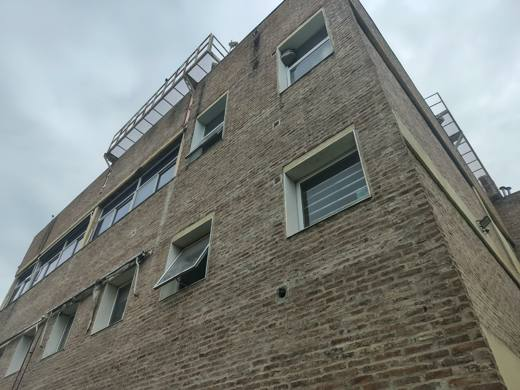
01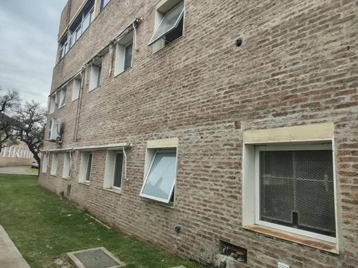
02 03
03 04
04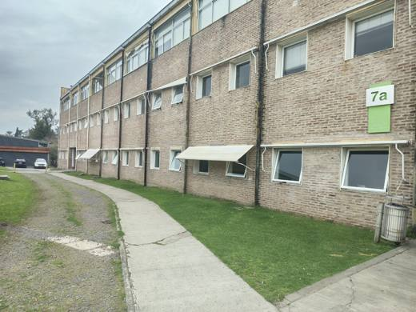
05 06
06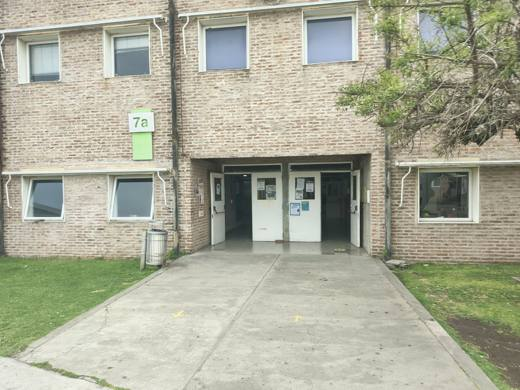
07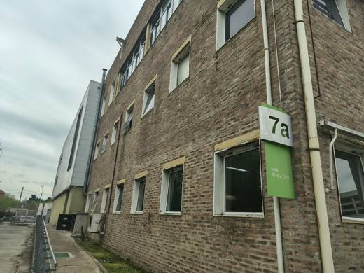
08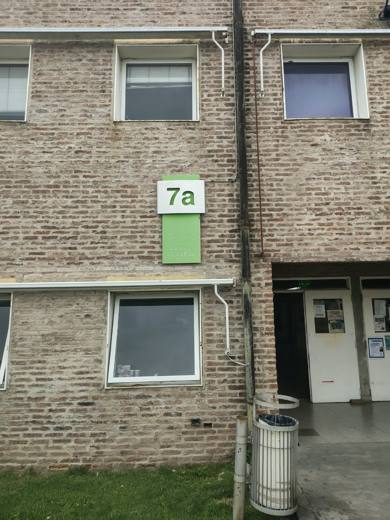
09 10
10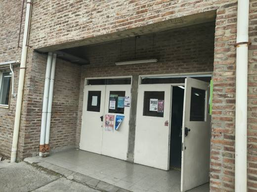
11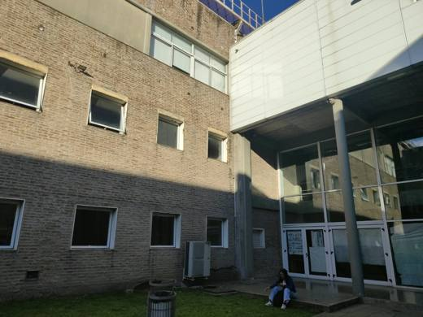
12Patio interior: paneles blancos y vidrio
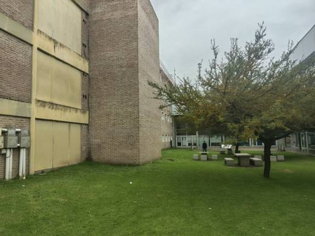
13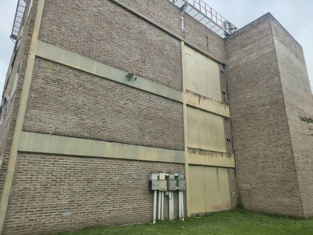
14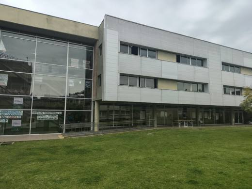
15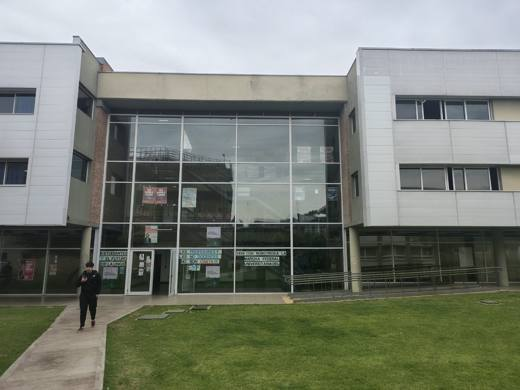
16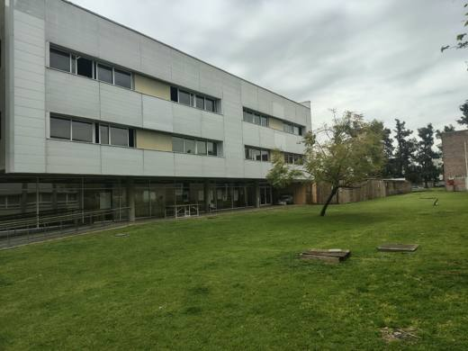
17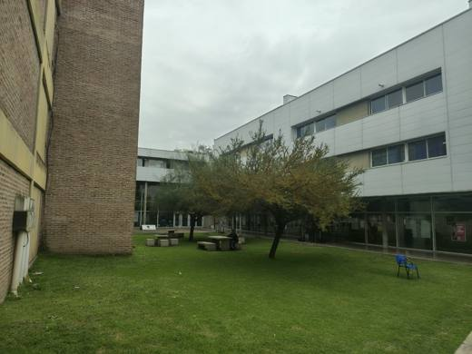
18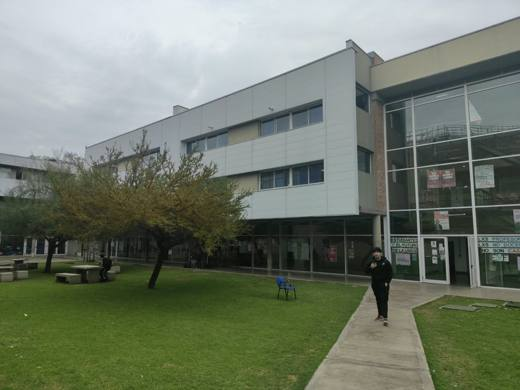
19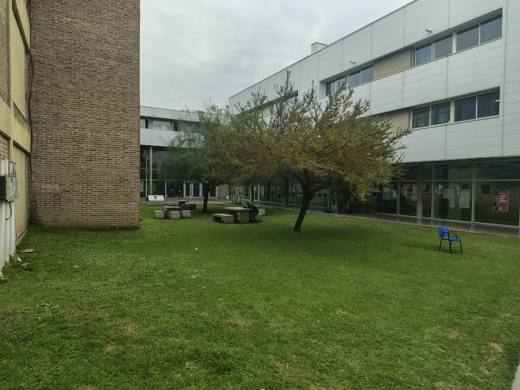
20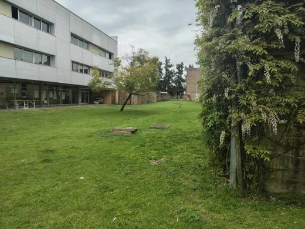
21 22
22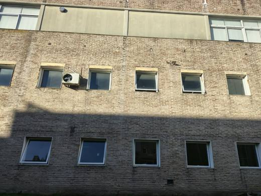
23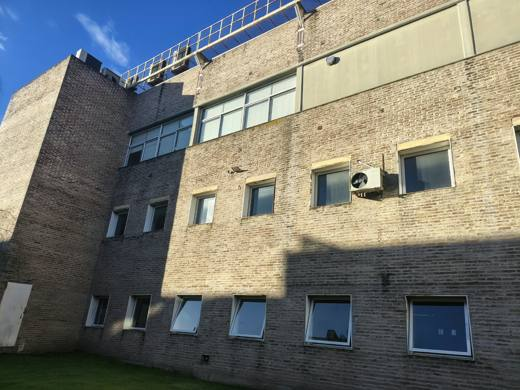
24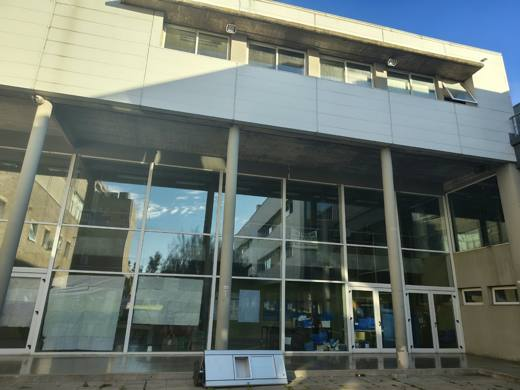
25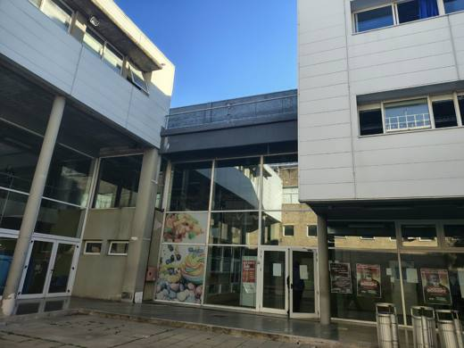
26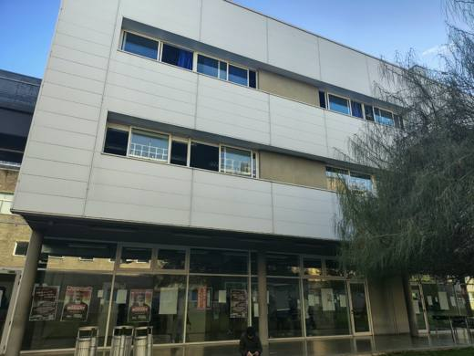
27Parte de atrás, del lado del estacionamiento
Tira de ladrillo de dos pisos, con la entrada 1 y la librería en la punta.


El pabellón bajo de vidrio, con la estructura de techo metálica, y sus paredes de ladrillo.

Las estructuras metálicas con escaleras que conectan los módulos centrales, y la parte de atrás de los módulos conectados (sin el pasillo de columnas del frente).

Edificio bajo de dos pisos con el camino de entrada.


El edificio blanco con el mural.

Entrada 3d.
Detrás del Módulo 7.
Árboles, bancos, caminos de cemento y el campo de pasto.


La entrada (cilindro, garita y portón) todavía no tiene fotos propias. Las capturas de Street View no se publican acá porque Google no permite reutilizarlas fuera de su servicio.